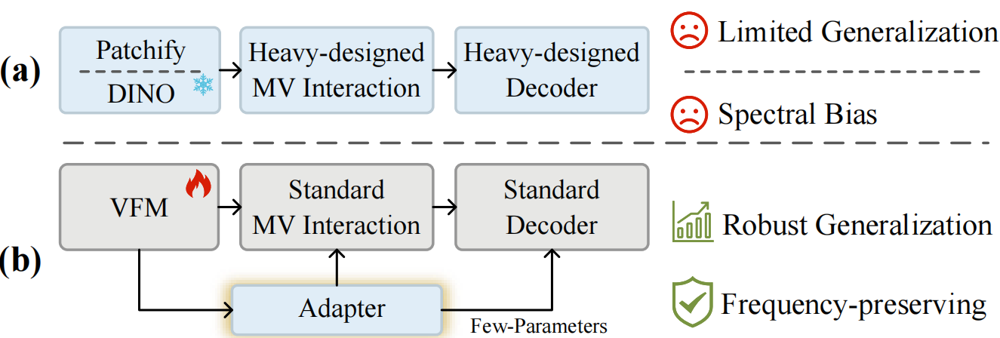
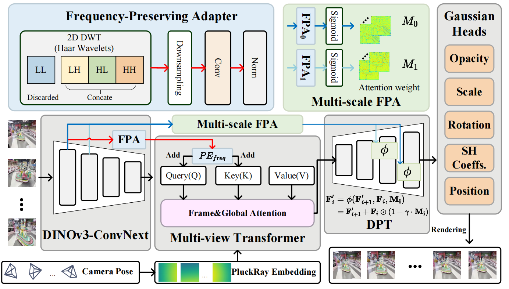
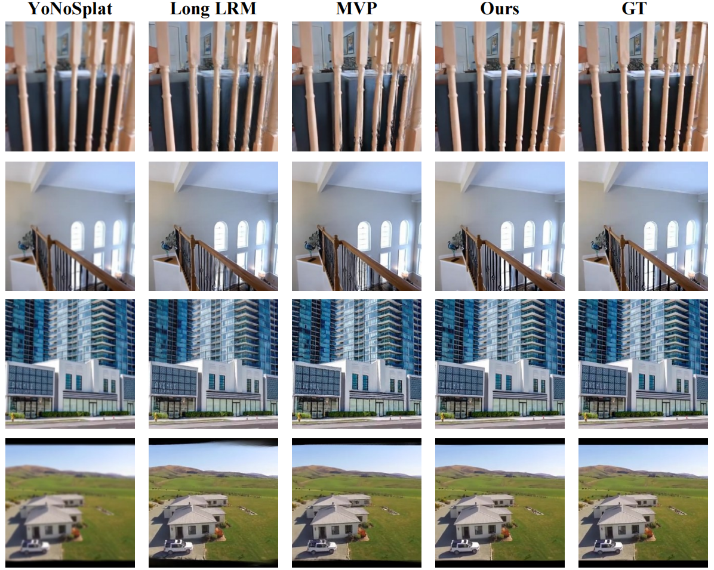

AdaptSplat: Adapting Vision Foundation Models for Feed-Forward 3D Gaussian Splatting
*Equal contribution †Corresponding author
Abstract
This work explores a simple yet powerful lightweight adapter design for feed-forward 3D Gaussian Splatting (3DGS). Existing methods typically apply complex, architecture-specific designs on top of the generic pipeline of image feature extraction → multi-view interaction → feature decoding. However, constrained by the scale bottleneck of 3D training data and the low-pass filtering effect of deep networks, these methods still fall short in cross-domain generalization and high-frequency geometric fidelity. To address these problems, we propose AdaptSplat, which demonstrates that without complex component engineering, introducing a single adapter of only 1.5M parameters into the generic architecture is sufficient to achieve superior performance. Specifically, we design a lightweight Frequency-Preserving Adapter (FPA) that extracts direction-aware high-frequency structural priors from the shallow features of a powerful vision foundation model backbone, and seamlessly integrates them into the generic pipeline via high-frequency positional encodings and adaptive residual modulation. This effectively compensates for the high-frequency attenuation caused by over-smoothing in deep features, improving the fitting accuracy of Gaussian primitives on complex surfaces and sharp boundaries. Extensive experiments demonstrate that AdaptSplat achieves state-of-the-art feed-forward reconstruction performance on multiple standard benchmarks, with stable generalization across domains.
Visual Results
Novel view synthesis results on DL3DV scenes (128 input views). Use the arrows or dots below to navigate between scenes.
Visual Comparison
Drag the slider to compare Ours (left) vs the selected method (right). Use the arrows or dots below to switch scenes.
Insight

Paradigm comparison. Unlike (a) existing methods that struggle with weak generalization and spectral bias due to complex component designs, (b) AdaptSplat introduces a minimalist adaptation paradigm. It utilizes a single lightweight adapter to efficiently activate VFM priors, achieving superior generalization and high-fidelity reconstruction.
Method

Overview of AdaptSplat. Based on the generic feature extraction-interaction-decoding pipeline, AdaptSplat introduces a lightweight Frequency-Preserving Adapter (FPA, 1.5M parameters). FPA explicitly extracts high-frequency structural priors to combat the network's spectral bias. These priors are then injected into the Multi-view Transformer as frequency-guided positional encodings (PE) and into the DPT decoder via multi-scale adaptive residual modulation, significantly sharpening the 3D Gaussian primitives.
Qualitative Results

RE10K visual comparison. AdaptSplat produces sharper boundaries and finer texture details compared to Long-LRM and MVP.

DL3DV qualitative comparison. AdaptSplat yields superior high-frequency fidelity and sharper geometric boundaries. On complex scenes such as overlapping glassware or high-frequency tabletop textures, Long-LRM and MVP exhibit noticeable blurring, while AdaptSplat closely matches the ground truth.
BibTeX
@article{xing2026adaptsplat,
title = {AdaptSplat: Adapting Vision Foundation Models for Feed-Forward 3D Gaussian Splatting},
author = {Xing, Mingwei and Wang, Xinliang and Shi, Yifeng},
journal = {arXiv preprint arXiv:2605.10239},
year = {2026}
}